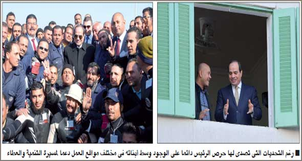

الأثنين
28 من رمضان 1442 هــ 10 مايو 2021
29℃ القاهرة, مصر
بيانات الطالب
| مصر | العالم | تكنولوجيا | رياضة | كاريكاتير |
مقال رئيس التحرير : مهارة القبطان في ظل أعتي العواصف
سنوات صعبة مليئة بالأزمات من الإرهاب الذى كان يطبق على مصر من الشرق والغرب،
ويتغلغل فى داخلها، إلى الحروب الإقليمية التى كان شررها يتطاير، ويلقى علينا
بالمخاطر والأعباء، بالإضافة إلى تفشى وباء كورونا، وما ترتب عليه من أزمة صحية
واقتصادية، والتهديد الذى مثله بناء السد الإثيوبى، ووسط هذه الأنواء وغيرها تمكن
قبطان سفينة الوطن الرئيس عبدالفتاح السيسى بمهارته من الإبحار بها إلى بر الأمان،
بل وتحقيق إنجازات غير مسبوقة فى البناء والتنمية.
كانت الصورة معتمة والرياح عاصفة على العالم كله، وكانت
سيناء وكرا خطيرا لجماعات إرهابية أرادت تدمير مصر، وإراقة الدماء، ونشر الفتنة،
وعرقلة مسيرة التعمير والتنمية، واتخذت من جبال وهضاب سيناء الوعرة أوكارا لها،
تضرب منها وتهرب بسرعة، وارتكبت مجازر مروعة بين السكان الآمنين وقوات الأمن، ولم
تكن تتورع عن القيام بأى فظائع، لكن من خلال عدة عمليات ناجحة استطاعت قوات الأمن
اجتثاثها من جذورها واستئصال هذا الورم السرطانى الخطير، وتأمين مناطق شاسعة ووعرة،
لتتعافى سيناء وتكون من أهم مناطق الجذب والتطور الصناعى والزراعى والسمكي، وتكون
أحد مراكز التنمية التى توفر العمل لأبنائها، وللكثيرين من أبناء الوادى والدلتا.
أما من ناحية حدودنا الغربية فكان التحدى الخطير هو
التصدى بقوة لجماعات وميليشيات مدعومة من الخارج، كانت تسيطر على مساحات شاسعة من
ليبيا الشقيقة، عاثت فيها دمارا وقتلا وتخريبا، وهددت حدودنا الغربية، التى تمكنت
من التسلل عبرها لتنال من أمن مصر وشعبها، فكان للدور المصرى سياسياً وعسكرياً
الفضل الأكبر فى احتواء الأزمة، واستطاعت قوات الأمن المصرية إيقاف الميليشيات، ثم
العمل على تفكيكها، والتوصل إلى اتفاق يقضى بتشكيل حكومة ليبية، لنزع فتيل الأزمة،
وإجلاء القوات الأجنبية، والعمل الدءوب من أجل منع سقوط ليبيا فى أيدى تلك الجماعات
المسلحة.

أما من الناحية الجنوبية فكان الاتفاق مع السودان من
أجل التعاون سياسياً وعسكرياً خطوة مهمة لكلا البلدين الشقيقين فى مواجهة الأخطار
المشتركة، وكانت مناورة «حماة النيل» الأخيرة واحدة من أوجه التعاون العسكرى الجاد
فى درء أى تهديدات، وردع كل من تسول له نفسه التعدى على حقوق أو أراضى البلدين،
وجسد التعاون المصرى ــ السودانى نموذجاً يعطى الأمل فى قدرة الأشقاء على تحقيق
المكاسب، ودرء المخاطر بالتعاون والعلاقات الأخوية التى امتدت إلى مختلف مجالات
التنمية فى البلدين، والتى نتوقع أن تزدهر وتثمر الخير على شعبى البلدين، وتكبح
جماح أى طامع فى مواردهما وثرواتهما.
وكان التحدى الكبير هو مواصلة التنمية رغم تفشى جائحة
كورونا فى العالم، وما استتبعه من خسائر وأضرار فى قطاعات عدة، أبرزها السياحة.
ورغم ما عاناه العالم من خسائر فادحة، وتراجع معدلات النمو فى أكبر بلدان العالم
وأكثرها ثراء إلى ما دون الصفر، فإن مصر كانت من بين البلدان القليلة التى تمكنت من
تحقيق معدلات نمو إيجابية فى أشد موجات الجائحة، وكان للقطاع الصحى والمبادرات
الشعبية بالتعاون والمؤازرة من القوات المسلحة المصرية الدور الكبير فى تجنب تفشى
الجائحة بصورة خطيرة، مع تواصل حملات التطعيم باللقاحات، إضافة إلى إنشاء خطوط
إنتاج مصرية للقاحات لتوفير جميع الاحتياجات المحلية لسرعة القضاء على الجائحة،
وتصدير الفائض إلى البلدان الصديقة والشقيقة، لتكون مصر من الدول القليلة التى تنتج
اللقاحات بأيدى أبنائها، لتوفر لنا ما يكفى من لقاحات تطمئننا على صحة وحياة
أبنائنا، والخروج من أزمة أبطأت من انطلاقتنا القوية نحو التنمية، لنستعيد عافيتنا،
ونخرج من دائرة الخوف والمرض، ونمارس حياتنا الطبيعية بمزيد من الثقة والسرعة
والجدية، وتعويض ما فاتنا.
لم يكن يتوقع أحد أو يتصور إقامة العاصمة الإدارية
الجديدة على أحدث الطرز المعمارية والنظام الهندسى المتطور خلال السنوات القليلة
الماضية، فهى واحدة من كبرى وأحدث المدن المتكاملة فى العالم، وتعد صرحا معماريا
وتنمويا شامخا، وهى ليست أبنية وخدمات فقط، بل ستكون العقل الإدارى والتنظيمى
وقاطرة التحديث فى مصر، وليست العاصمة الإدارية هى الوحيدة، بل لها امتدادات على
طول مصر وعرضها، لتوسيع شرايين مصر مع بناء قلب جديد ينبض بالحيوية والحداثة
والجمال، من أقصى الصعيد حتى المدن الجديدة على شاطئ المتوسط، ومن البحر الأحمر
وسيناء حتى العلمين، مع إنشاء أحدث شبكات المواصلات فى العالم مثل القطار الكهربائى
السريع، الذى يربط العاصمة الإدارية بكل من البحر الأحمر شرقا، والبحر المتوسط فى
الشمال الغربي، وفى الوقت نفسه يجرى تطوير الشبكات القديمة، وشق طرق جديدة لتتضاعف
المساحة المأهولة فى مصر، وينتشر العمران فى كل مكان، ونخرج من اختناقات الوادى
الضيق «الدلتا» التى تزحف عليها المبانى السكنية وتقضم أراضيها الخصبة.
إن ما حدث فى السنوات السبع الماضية رغم كل التحديات
والأنواء لم يكن من المتوقع إنجازه فى عقود طويلة، فإنتاجنا من الكهرباء والطاقة
تضاعف، لتنير طرقنا ومساكننا وتدير ماكينات العمل فى مختلف المجالات، علاوة على
الاهتمام بمنظومة التعليم الأساسي والعالى حيث تم التوسع فى الجامعات وزاد عددها
وتنوعها ومستوى الأداء فيها لتكون رافعة أساسية فى تنمية مصر وإعدادها لمواجهة
تحديات المستقبل، وتكون شريكة مؤثرة ومنتجة للعلم والتطور والتنمية، وسوف نجنى ثمار
كل هذا الجهد الشاق قريبا، فالعمل والبناء كانا بحاجة للكثير من التحمل والجدية حتى
يمكن أن يزهرا من أجلنا، ويضمنا مستقبلا أفضل لأبنائنا.
وكلنا تفاؤل بإبحار قبطان مصر بها إلى مكانة مرموقة
تستحقها وتليق بقائدها الماهر، ليواصل العطاء، ونجنى المزيد من الخير والأمان.. وكل
عام ومصر وقبطانها بكل خير.